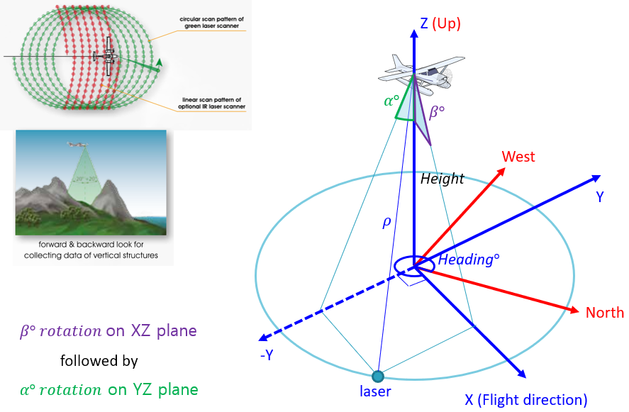

Subaerial module¶
cBLUE (comprehensive Bathymetric Lidar Uncertainty Estimator) Copyright (C) 2019 Oregon State University (OSU), Joint Hydrographic Center/Center for Coast and Ocean Mapping - University of New Hampshire (JHC/CCOM - UNH), NOAA Remote Sensing Division (NOAA RSD)
This library is free software; you can redistribute it and/or modify it under the terms of the GNU Lesser General Public License as published by the Free Software Foundation; either version 2.1 of the License, or (at your option) any later version.
This library is distributed in the hope that it will be useful, but WITHOUT ANY WARRANTY; without even the implied warranty of MERCHANTABILITY or FITNESS FOR A PARTICULAR PURPOSE. See the GNU Lesser General Public License for more details.
You should have received a copy of the GNU Lesser General Public License along with this library; if not, write to the Free Software Foundation, Inc., 51 Franklin Street, Fifth Floor, Boston, MA 02110-1301 USA
Contact: Christopher Parrish, PhD School of Construction and Civil Engineering 101 Kearney Hall Oregon State University Corvallis, OR 97331 (541) 737-5688 christopher.parrish@oregonstate.edu
-
class
Subaerial.Jacobian(S)[source]¶ This class is used to calculate and evaluate the Jacobian of a sensor model’s laser geolocation equation. The class Jacobian attempts to decouple a Jacobian and the data used to evaluate it. For example, the inputs to the lambdified Jacobian components are not hard-coded in the function call, but are determined from accessing the .func_code.co_varnames attribute of the Jacobian component and then looking up the corresponding values in a dict. Although this somewhat decouples the Jacobian from the data used to evaluate it, the dict containing the corresponding values is manually created, separate from the sensor model. Development plans for future versions include decoupling the Jacobian and the data to evaluate it even more, by creating the dict based on the sensor model.
Two key modules that are used throughout are sympy and numexpr:
The module sympy is used to symbolically define the laser geolocation equation and the corresponding Jacobian and to numerically evalulate the Jacobian.
The module numexpr is used to accelerate calculations using large numpy arrays (https://github.com/pydata/numexpr). One characteristic of numexpr is that numexpr expressions do not allow indexing of variables, so what might normally be coded as, for example, var = data[1] * 3 would require something like data1 = data[1] before executing the numexpr expression “var = data1 * 3”.
-
calc_trig_terms(a_est, b_est, r, p, h)[source]¶ helper method to evaluate the trigonometric terms in the Jacobian
This method aims to simplify evaluation of the Jacobian by pre-evaluating the trigonometic terms of the Jacobian. The reasoning is that this speeds up the computations because the trigonometric terms are only evaluated once, instead of every time they show up in the Jacobian.
Parameters: - a_est – a calculated from the data
- b_est – b calculated from the data
- r – roll data
- p – pitch data
- h – heave data
Return tupe(ndarray): the evaluated trigonometric terms
-
eval_jacobian(data)[source]¶ evaluate the Jacobian of the modified laser geolocation equation
This method evaluates the Jacobian by passing the relevant parameters to the lambdified functions representing the x, y, and z components of the Jacobian.
To simplify the Jacobian evaluation, only the non-zero terms are kept. Accordingly, the rows of variance/covariance matrix corresponding to the Jacobian zero terms are deleted. Additionally, the Jacobian evaluation is simplied further by not calling get_J_term_values() for Jacobian terms equal to 1; rather, the corresponding row in the evaluated Jacobian array is set to all 1s.
Parameters: data – Return (ndarray, ndarray, ndarray): x, y, and z evaluated Jacobian components
-
form_jacobian()[source]¶ generate the jacobian of the specified geolocation equation
This method generates the Jacobian (i.e., the matrix of partial derivatives with respect to component variables) of the specified geoloation equation using the sympy symbolic math package. Using sympy to symbolically calculate the Jacobian simplifies the coding of what would otherwise be very long equations.
Return (Matrix, Matrix, Matrix): sympy matrices for x, y, and z Jacobian components
-
get_J_term_values(J_comp, J_term, values_for_J_eval)[source]¶ gets the calculated values needed to evaluate the specified Jacobian component
This method retrieves from the passed ‘values_for_J_eval parameter the calculated values needed to evaluate the specified Jacobian component (i.e., the x, y, or z component).
Parameters: - J_comp –
- J_term –
- values_for_J_eval –
Return vals:
-
get_calc_vals_for_J_eval(data)[source]¶ calculatse and assembles the values needed to evaluate the Jacobian
This methods calculates and assembles the values needed to evaluate the Jacobian.
- estimate rho, a, and b from data
- use rho, a, and b estimates to calculate initial X, Y, and Z
- calculate difference betwween inital X, Y, and Z and LAS X, Y, and Z (dX, dY, and dZ)
- calculate polynomial surfae coefficients to account for dX, dY, and dZ
- precalculate sine and cosine of attitude data to simplify evaluation of Jacobian
The returned dictionary contains the following data:
data description a calculated a values b calculated b values rho calculated rho values p_coeffs {‘x’:{coeff:value,…},’y’:{coeff:value,…},’z’:{coeff:value,…}} sin_a calculated sin(a) values sin_b calculated sin(b) values sin_r calculated sin(r) values sin_p calculated sin(p) values sin_h calculated sin(h) values cos_a calculated cos(a) values cos_b calculated cos(b) values cos_r calculated cos(r) values cos_p calculated cos(p) values cos_h calculated cos(h) values :param data :return dict: calcualted values used to evaluate Jacobian
-
lambdify_jacobian(eval_type='numexpr')[source]¶ turn the symbolic Jacobian into a function for faster computation
This method “lambdifies” (or “functionizes”) the Jacobian components, for faster calculations. Part of this lambdify process includes simplifying the numerous trigonometric calculations of the Jacobian by defining the Jacobian functions to be functions of the sines and cosines of the various parameters, instead of the parameters directly.
Reference: https://docs.sympy.org/latest/modules/utilities/lambdify.html
Parameters: eval_type (str) – the eval type for sympy lambdification Return (function, function, function): lambdified x, y, and z Jacobian components
-
-
class
Subaerial.SensorModel(sensor)[source]¶ This class is used to define and access the sensor model of a particular lidar sensor, including the laser geolocation equation and any supporting information or parameters. Currently, only a single sensor, the Riegl VQ-880-G, is supported, but development plans include extending support to the Chiroptera II (or III or IV).
TODO: move the a, b uncertainty values here
-
calc_aer_pos(coeffs, a_est, b_est, aer_pos_pre)[source]¶ calculates the final cBLUE subearial position
This method calculates the final cBLUE subaerial position by adding a polynomial-surface modelled error term
Parameters: - coeffs –
- a_est –
- b_est –
- aer_pos_pre –
Returns:
-
calc_aer_pos_err(aer_pos, data)[source]¶ calculates the difference between the las and cBLUE positions
This method calculates the differences between the x, y, and z components of the final cBLUE positions and the corresponding las file positions.
The data parameter contains the following ndarrays:
Index ndarray description 0 t_sbet sbet timestamps 1 t_las las timestamps 2 x_las las x coordinates 3 y_las las y coordinates 4 z_las las z coordinates 5 x_sbet sbet x coordinates 6 y_sbet sbet y coordinates 7 z_sbet sbet z coordinates 8 r sbet roll 9 p sbet pitch 10 h sbet heading Parameters: aer_pos – Returns:
-
calc_aer_pos_pre(rho_est, a_est, b_est, data)[source]¶ calculates the inital cBLUE aubaerial position
This method calculates the inital cBLUE subaerial position using the ‘lambdified’ geolocation equation (without the polynomial-surface error terms).
The data parameter contains the following ndarrays:
Index ndarray description 0 t_sbet sbet timestamps 1 t_las las timestamps 2 x_las las x coordinates 3 y_las las y coordinates 4 z_las las z coordinates 5 x_sbet sbet x coordinates 6 y_sbet sbet y coordinates 7 z_sbet sbet z coordinates 8 r sbet roll 9 p sbet pitch 10 h sbet heading Parameters: - rho_est –
- a_est –
- b_est –
Returns:
-
calc_diff(subaer_pos_pre, x_las, y_las, z_las)[source]¶ calculate the difference between the las position and the initial cBLUE position
This method calculates the difference between the x, y, and z components of the positions in the las file and the respective cBLUE-calculated position components. Ideally, a cBLUE-calculated position would identically match the corresponding position in the las file, but due to differences between the proprietary manufacturer sensor model and the sensor model used by cBLUE, the positions are not identical. The differences calculated by this method are used in the polynomial-surface error modeling process to correct for the errors caused by the sensor model discrepancies.
Parameters: subaer_pos_pre – Returns:
-
calc_poly_surf_coeffs(a_est, b_est, dx, dy, dz, itv=10)[source]¶ estimates error model using polynomial surface fitting
This method calculates the coefficients of the polynomial-surface error model intended to account for the positional errors resulting from differences between the sensor model implemented in cBLUE and the unknown, proprietary manufacturer sensor model.
The original Matlab research code used a ‘fit’ function with a ‘poly23’ option, which is emulated here by using np.linalg.lstsq with terms for a, b, a^2, ab, b^2, a^2b, ab^2, and b^3.
Only every itv-th point is used to calculate the polynomial surface coefficients, for small speed gains in the calculations of the coefficients.
Parameters: - a_est –
- b_est –
- dx –
- dy –
- dz –
- itv –
Returns: list[tuple, tuple, tuple] TODO: verify
-
define_obseration_equation()[source]¶ define the lidar geolocation observation equation
The inital observation equation is defined as follows:

However, to account for the differences between the assumed sensor model and the proprietary sensor model, the initial observation equation is modified to include terms derived from polynomial surface fitting of differences in the X, Y, and Z components of the LAS positions and the positions calculated from the intial cBLUE observation equation.

Returns: (sympy object, sympy object, sympy object, function)
-
estimate_rho_a_b(data)[source]¶ calculates estimates for rho, alpha, and beta
This method calculates the estimated values for rho, alpha, and beta, which are the lidar range, angle in the YZ plane, and angle in the XZ plane, respectively (see the following image).
Alpha and beta are used to model the scan pattern, as a substitute for the actual, unknown, proprietary scan pattern model implemented by the manufacturer. Polynomial-surface error modeling is used to account for the positional differences resulting from the difference between the cBLUE scan model and the manufacturer scan model.
Returns: (list[], list[], list[], list[])
-
eval_type= 'numexpr'¶
-
set_rotation_matrix_airplane()[source]¶ define rotation matrix for airplane
This method first generates the airplane rotation matrix, R, using symbolic calculations. The symbolic components of the matrix R are then “functionized”, or “lambdified”, for faster processing (because symbolic calculations are relatively slow). The components of R are functionized separately from the general observation equation, which includes R, M (the sensor rotation matrix), and polynomial-surface- correction terms, because R is later used to estimate parameters describing the assumed scan pattern, which is an approximation of the manufacturer’s proprietary scan pattern.
Reference: (http://docs.sympy.org/latest/modules/utilities/lambdify.html)
\[\begin{split}\begin{align*} R1 &= \left[\begin{matrix}1 & 0 & 0\\0 & \cos{\left (r \right )} & - \sin{\left (r \right )}\\0 & \sin{\left (r \right )} & \cos{\left (r \right )}\end{matrix}\right] \\ R2 &= \left[\begin{matrix}\cos{\left (p \right )} & 0 & \sin{\left (p \right )}\\0 & 1 & 0\\- \sin{\left (p \right )} & 0 & \cos{\left (p \right )}\end{matrix}\right] \\ R3 &= \left[\begin{matrix}\cos{\left (h \right )} & - \sin{\left (h \right )} & 0\\\sin{\left (h \right )} & \cos{\left (h \right )} & 0\\0 & 0 & 1\end{matrix}\right] \\ R &= R3*R2*R1 = \left[\begin{matrix}\cos{\left (h \right )} \cos{\left (p \right )} & - \sin{\left (h \right )} \cos{\left (r \right )} + \sin{\left (p \right )} \sin{\left (r \right )} \cos{\left (h \right )} & \sin{\left (h \right )} \sin{\left (r \right )} + \sin{\left (p \right )} \cos{\left (h \right )} \cos{\left (r \right )}\\\sin{\left (h \right )} \cos{\left (p \right )} & \sin{\left (h \right )} \sin{\left (p \right )} \sin{\left (r \right )} + \cos{\left (h \right )} \cos{\left (r \right )} & \sin{\left (h \right )} \sin{\left (p \right )} \cos{\left (r \right )} - \sin{\left (r \right )} \cos{\left (h \right )}\\- \sin{\left (p \right )} & \sin{\left (r \right )} \cos{\left (p \right )} & \cos{\left (p \right )} \cos{\left (r \right )}\end{matrix}\right] \end{align*}\end{split}\]Returns: Matrix Returns: List[lambdify functions]
-
static
set_rotation_matrix_scanning_sensor()[source]¶ define the lidar sensor rotation matrix
This method generates the rotation matrix associated with the scanning sensor. The variables a, b, and w describe the assumed scan pattern, which is an approximation of the manufacturer’s proprietary scan pattern.
a: the rotation in the YZ plane b: the rotation in the XZ plane
\[\begin{split}\begin{align*} M1 &= \left[\begin{matrix}1 & 0 & 0\\0 & \cos{\left (a \right )} & - \sin{\left (a \right )}\\0 & \sin{\left (a \right )} & \cos{\left (a \right )}\end{matrix}\right] \\ M2 &= \left[\begin{matrix}\cos{\left (b \right )} & 0 & \sin{\left (b \right )}\\0 & 1 & 0\\- \sin{\left (b \right )} & 0 & \cos{\left (b \right )}\end{matrix}\right] \\ M &= M2*M1 = \left[\begin{matrix}\cos{\left (b \right )} & \sin{\left (a \right )} \sin{\left (b \right )} & \sin{\left (b \right )} \cos{\left (a \right )}\\0 & \cos{\left (a \right )} & - \sin{\left (a \right )}\\- \sin{\left (b \right )} & \sin{\left (a \right )} \cos{\left (b \right )} & \cos{\left (a \right )} \cos{\left (b \right )}\end{matrix}\right] \end{align*}\end{split}\]Return Matrix M: the scanning sensor rotation matrix
-
-
class
Subaerial.Subaerial(J, merged_data, stddev)[source]¶ This class provides the functionality to calculate the subaerial portion of the total propagated uncertainty (TPU), given the Jacobian of a laser geolocation equation, merged lidar/trajectory data, and the standard deviations of the provided data.
The following table lists the contents of merged lidar/trajectory data array:
Index ndarray description 0 t_sbet sbet timestamps 1 t_las las timestamps 2 x_las las x coordinates 3 y_las las y coordinates 4 z_las las z coordinates 5 x_sbet sbet x coordinates 6 y_sbet sbet y coordinates 7 z_sbet sbet z coordinates 8 r sbet roll 9 p sbet pitch 10 h sbet heading The following table lists the contents of the array of standard deviations corresponding to the variables of the merged data array:
Index ndarray description 0 std_ang1 ang1 uncertainty 1 std_ang2 ang2 uncertainty 2 std_r sbet roll uncertainty 3 std_p sbet pitch uncertainty 4 std_h sbet heading uncertainty 5 stdx_sbet sbet x uncertainty 6 stdy_sbet sbet y uncertainty 7 stdz_sbet sbet z uncertainty 8 std_rho ? Parameters: - J (Jacobian) – Jacobian object
- ndarray – merged Lidar/Trajectory data
- ndarray – standard deviations of component variables
-
calc_subaerial_tpu()[source]¶ calculates the subaerial uncertainty
This method calculates the subaerial uncertainty through two major steps:
EVALUATE JACOBIAN
The eval_jacobian() method of the Jacobian object evaluates the Jacobian with the merged lidar/trajectory data passed to it. Although the Jacobian is first calculated symbolically, it’s evaluated as a collection of lambda functions, which are “used to calculate numerical values very fast.” (https://docs.sympy.org/latest/modules/utilities/lambdify.html)
PROPAGATE UNCERTAINTY
Once the Jacobian is evaluated, uncertainty is progagated by multiplying the square of the Jacobian with the squares of the standard deviations defined in the stddev parameter. The covariances are assumed to be zero. TODO: explain how this is implemented differently than shown by the propagation equation because the covariances are assumed to be 0.
Returns: (ndarray, ndarray, list[str])
-
propogate_uncertainty(J_eval)[source]¶ propogates the subaerial uncertatinty
This method propogates the uncertainty of the component uncertainties using the following equation:

Because only the non-zero terms of the Jacobian are kept (to simplify Jacobian evaluation), the rows in the variance/covariance matrix corresponding to the zero terms of the Jacobian are deleted. The table below summarizes which terms of the Jacobian are zero (and one).
index variable Jx Jy Jz 0 a . . . 1 b . . . 2 r . . . 3 p . . . 4 h . . 0 5 x 1 0 0 6 y 0 1 0 7 z 0 0 1 8 rho . . . Parameters: J_eval (tuple(ndarray)) – evaluated Jacobian values for X, Y, and Z components Return (ndarray, ndarray, list[str]): subaerial THU, subaerial TVU, THU and TVU column headers